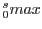

Calculates the xspec normalization per square arcminute for the Cosmic X-ray background after removal of point sources to some limiting level (min_flux). ELF is shorthand for the logN-logS.
We assume that integral[ELF] from 0 to infinity is less than
cxrb_norm, or that:
CXRB = X + integral[ELF].
Therefore, for any given ``blank sky'' observation where
the brightest point source has a flux smax, the total
X-ray emission in the field would be:
X + integral[ELF].
The currently available functions are:
hms: Hasinger, Miyaji, & Schmidt (2005), from ROSAT,
XMM, & Chandra):
mushotzky: (????):
cappelluti: Cappelluti et al (2008), from COSMOS:
mateos: Mateos et al (2008), from XMM'
Output: Xspec normalization for power law in units of photons/cm2/s/am2/keV
Examples::
point-source func=mateos min_src_flux=5.e-14 cxrb_norm=10.6 index=1.40